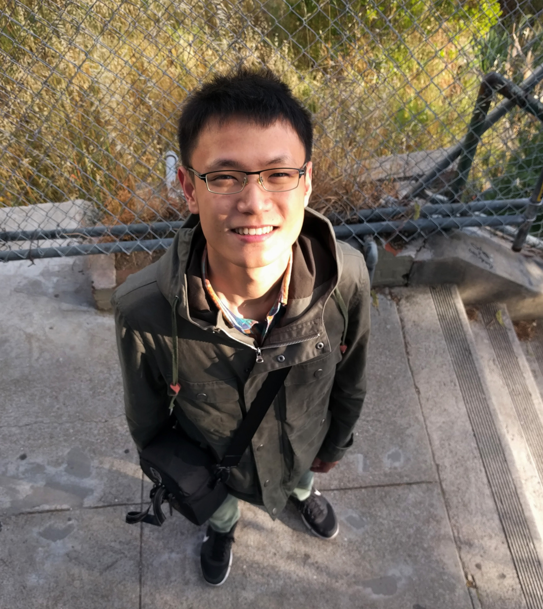

Ted is a second year CS PhD student at Cornell University, advised by
Prof. Emin Gün Sirer.
He is generally interested in designing and building practical
distributed systems. Currently, he focuses more on fundamental problems
of fault-tolerance, consensus protocols and peer-to-peer systems. In
general, he keeps a simple but vital taste: to build the systems which
are provably correct and practically effective.